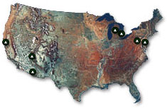

About Us
The Center for Advancing Microbial Risk Assessment (CAMRA) is an interdisciplinary research center established to develop scientific knowledge on the fate and risk of bioterrorist and other high priority infectious agents. CAMRA, headquartered at Michigan State University (MSU) and Drexel University, was established by EPA and DHS in the wake of the 2001 anthrax attacks in Washington, DC and Florida. CAMRA's research will support credible risk assessments for decontaminating microbiological threats such as plague, anthrax, etc . CAMRA's investigations focuses on: Exposure: Detection, Fate and Transport of Biological Agents of Concern (BAC), Infectious Disease Models for Assessing Microbial Risks and Developing Control Strategies, Dose-response Modeling and Applications, Assessment-Analysis Interface, and Knowledge Management, Learning and Discovery. The CAMRA team includes researchers from MSU, Drexel, ASU, NAU, UC Berkeley, Carnegie Mellon University and the University of Michigan.
Mission
CAMRA has twin missions. The first is a technical mission to have developed critically reviewed and interpreted sets of models, tools and information that will be used in a credible risk assessment framework to reduce or eliminate health impacts from deliberate use of biological agents of concern (BAC) as bioterrorists agents in the indoor and outdoor environment. The second mission is to build a national network for MRA for knowledge management, learning and transfer, for the community of scientists, community of students via educational programs and community of professionals in the field and in our communities.
CAMRA is a consortium of scientists who have extensive expertise in quantitative microbial risk assessment (MRA) methods, bio-security, and infectious disease transmission through environmental exposures. CAMRA has two main goals. The first is a technical mission to develop critically reviewed and interpreted sets of models, tools, and information that will be used in a credible risk assessment framework to reduce or eliminate health impacts from deliberate use of biological agents of concern (BAC) as bioterrorist agents in the indoor and outdoor environment. The second mission is to build a national MRA network for knowledge management, learning, and transfer for scientists, students, and professionals in the field and in our communities. There are five major research projects which will define the objectives and activities of CAMRA. Each project objective has been developed through collaborative efforts of scientists and will be integrated via a management structure that facilitates interaction. These research projects address exposure, methods and models; dose-response; population outcomes; risk frameworks; and knowledge management, transfer and learning. Through these projects we will:
- Document the sensitivity and specificity of risk exposure methods and their ability to address levels of safety;
- Create a research toolbox with validated surrogates for BAC;
- Evaluate the fate and transport of bioterrorist agents in water distribution systems, air, and buildings;
- Develop a suite of models for characterizing exposure via aerosols and the indoor environment that are validated with real-world data where available, describing disease transmission through dynamic stochastic and deterministic models, and assessing controls such as vaccines, decontamination, and quarantines; and
- Produce an inventory of critically analyzed dose-response relationships for Category A agents and mechanistic dose-response models.
Overall these projects will focus on assessment, lessons learned, new science and research, databases, tools and methods and finally knowledge building for learning and communication purposes. We anticipate that CAMRA will produce a suite of outcomes for government officials and first responders as well as the research, education, and professional communities.
Investigators
Co-directors:
- Joan B. Rose, MSU (rosejo@msu.edu)
- Charles N. Haas, Drexel (haascn@drexel.edu)
Project Leaders:
- Charles P. Gerba, University of Arizona gerba@ag.arizona.edu
- Joseph N.S. Eisenberg, University of Michigan-Ann Arbor. jnse@umich.edu
- Charles N. Haas, Drexel
- Patrick Gurian, Drexel pgurian@drexel.edu
- Rosina Weber, Drexel; rweber@cis.drexel.edu and Ewen Todd MSU; toddewen@cvm.msu.edu